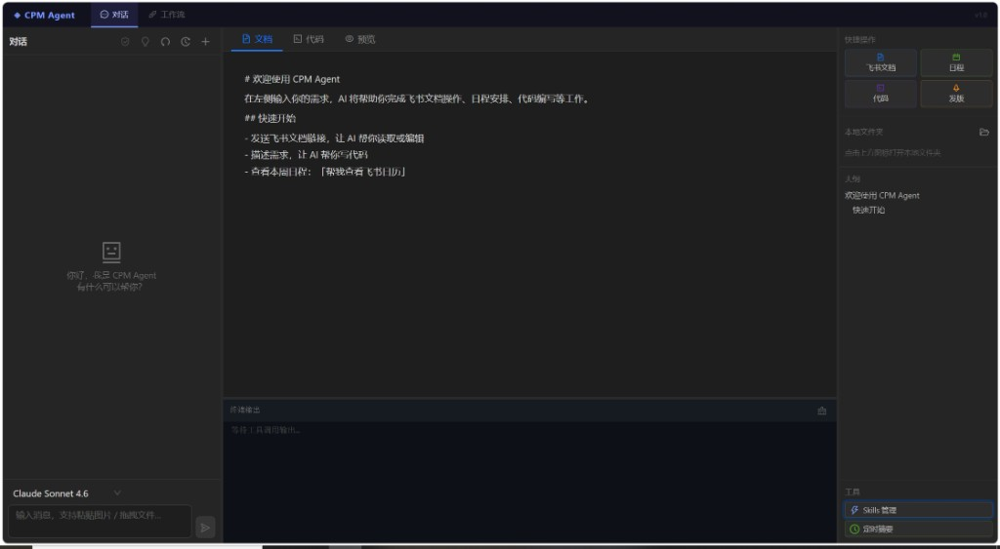
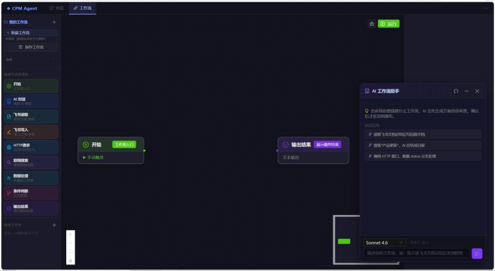
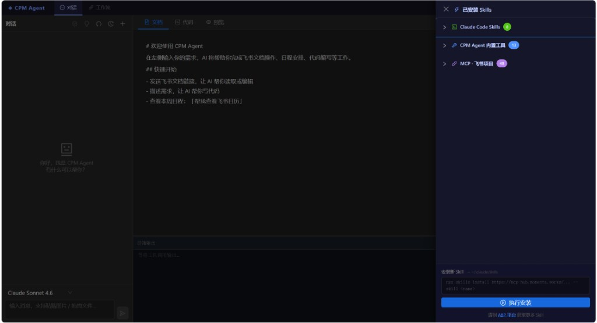
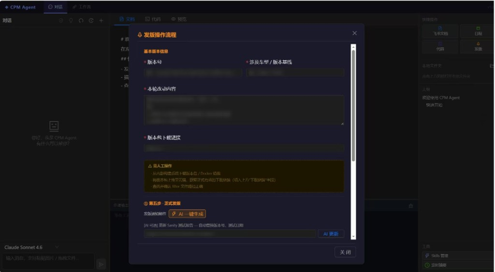
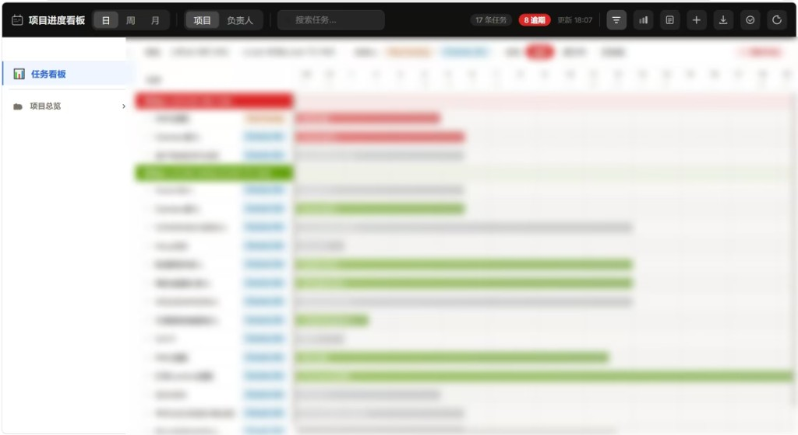
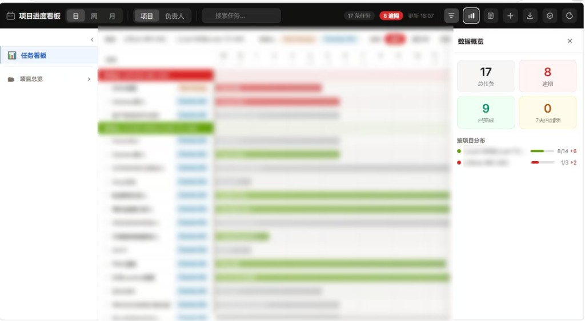
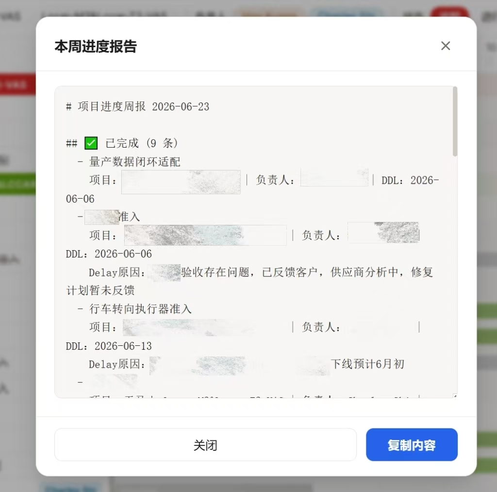
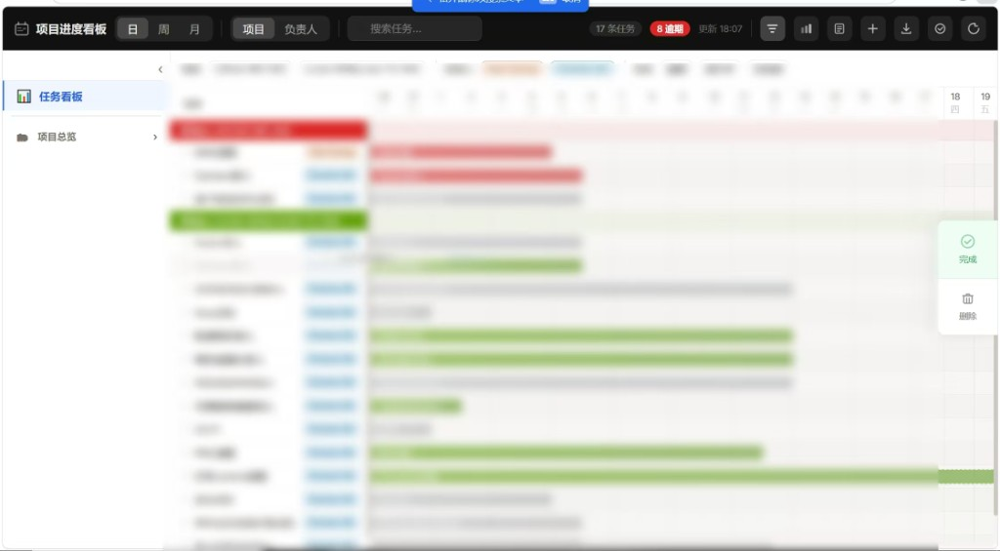

CASE STUDY / MOMENTA
让 AI 参与项目管理的日常工作。
在 Momenta 客户项目管理实习期间，我从信息分散、重复操作和任务协同等业务问题出发，设计并开发 CPM Agent，同时探索用项目看板支持任务追踪与周报整理。
- 实习时间
- 2026.04 — 2026.08
- CPM Agent 开发时间
- 2026.06 — 2026.08
- 个人职责
- 需求分析 / 产品设计 / 核心开发
- 交付阶段
- 可用原型 · 内部测试与试用
01 / CPM AGENT
从分散的操作，到统一的工作台。
业务问题
项目管理中的信息查询、文档处理与流程执行分散在多个工具中。终端式 AI 交互也需要转化为业务同学更容易使用的产品入口。
产品与技术方案
基于 LLM 搭建智能工作台，通过 MCP、Function Calling 集成飞书和本地工具，以 ReactFlow 实现工作流编排，支持条件判断、批量处理和定时 / Webhook 触发。
我的工作与验证
独立完成场景分析、需求拆解和功能架构设计，推进核心功能开发、模块集成与调试。通过内部测试和试用验证核心业务流程，为后续迭代提供依据。








02 / PROJECT BOARD
让任务、进度与风险更容易看见。
业务问题
多项目、多负责人并行时，任务状态和截止时间容易分散在不同沟通链路中，增加进度同步与周报整理的工作量。
方案设计
将任务、负责人、状态和截止时间组织为可筛选的看板，结合数据概览、延期提示与周报生成支持项目跟进。
个人贡献
从客户项目管理视角梳理字段、状态与操作逻辑，围绕任务追踪、风险同步和阶段复盘搭建轻量化工具原型。








本页沿用已有的脱敏界面材料，展示产品设计与工具实践；内部源代码、客户信息和业务文档不在此公开。